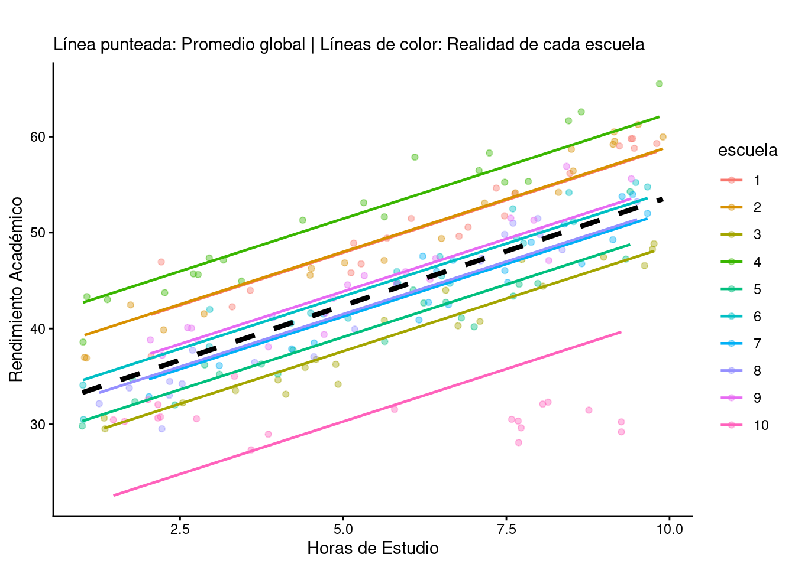
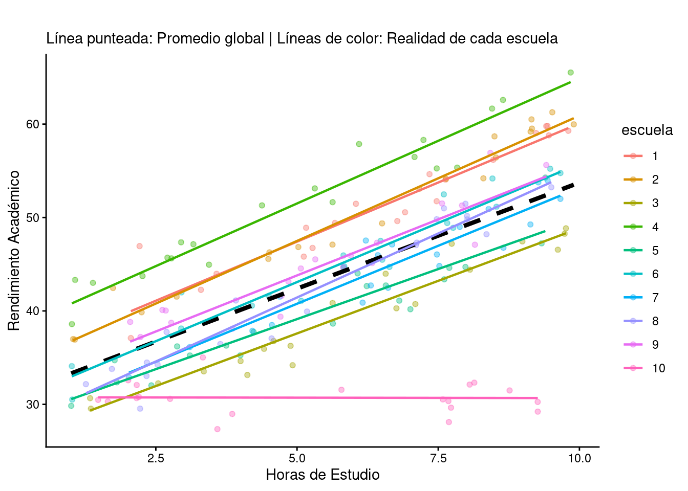

En el análisis de datos educativos, aparece recurrentemente un error sistemático casi por inercia: tratar a cada alumno como si fuera una unidad aislada en el vacío. Se realiza una regresión lineal, se obtiene un p-valor y se dictamina si una intervención funciona. Pero hay un problema invisible que invalida miles de investigaciones cada año: el anidamiento.
En este artículo, se desglosa por qué los promedios suelen mentir y cómo los Modelos Lineales Mixtos (LMM) permiten rescatar la individualidad dentro del grupo, siguiendo las nociones del libro Análisis de datos en ciencias sociales y de la salud III (Pardo Merino and Ruiz Díaz 2012).
Cualquier curso de estadística básica comienza con los supuestos del Modelo Lineal General (MLG). Uno de los más sagrados es la independencia de los errores. Este supuesto dicta que el residuo de un sujeto no debe darnos información sobre el residuo de otro. Aunque teóricamente es conveniente, en el mundo real no siempre se cumple, especialmente en los casos como la investigación educativa, donde los alumnos de una clase no pueden considerarse como sujetos independientes desde el punto de vista de la estadística. Esto sucede porque los alumnos están anidados:
Los alumnos están dentro de aulas
Las aulas están dentro de colegios
Los colegios están dentro de distritos
Si dos alumnos comparten el mismo profesor, el mismo clima de aula y el mismo nivel socioeconómico del barrio, sus puntuaciones pueden estar correlacionadas en algún sentido. Ignorar esto no es solo un descuido, sino contradecir la esencia misma de la probabilidad, lo que infla artificialmente el tamaño de la muestra y produce “falsos positivos” (el famoso Error Tipo I) masivos.
Históricamente se han intentado solucionar esto de dos formas, ninguna de las cuales es óptima:
Agregación: promediar las notas de toda la clase y analizar solo los promedios de las aulas. Resultado: se pierde toda la variabilidad individual (la gran mayoría de los datos)
Desagregación (complete pooling): tratar a 300 alumnos de 10 colegios como si fueran 300 alumnos independientes. Resultado: se subestima el error estándar y se corre el riesgo de creer que efectos insignificantes son “reales”
Aquí es donde entran los Modelos Mixtos. Estos modelos permiten que existan “efectos fijos” (la tendencia general que buscamos) y “efectos aleatorios” (la variabilidad propia de cada grupo).
Se simula acontinuación un escenario: se quiere ver cómo afectan las horas de estudio (variable predictora) al rendimiento académico en 10 escuelas diferentes.
En el fragmento de código a continuación se simula un conjunto de datos donde se analiza el rendimiento de 20 alumnos de 10 escuelas (200 alumnos en total). Se quiere investigar la relación entre las horas de estudio y el rendimiento y se “obliga” a que éstas tengan un efecto “de media” en cada alumno; por otra parte se añade un ruido sistemático para cada escuela y por último un ruido por cada alumno, para que los datos no se apiñen en el mismo entorno. Por razones de visualización, se fija que en una escuela estudiar más no tenga efectos en el rendimiento.
library(lme4)
set.seed(42) # Replicabilidad
# 10 escuelas con 20 alumnos cada una
n_escuelas <- 10
n_alumnos <- 20
total_n <- n_escuelas * n_alumnos
df_edu <- data.frame(
escuela = factor(rep(1:n_escuelas, each = n_alumnos)),
horas_estudio = runif(total_n, 1, 10),
rendimiento = rep(0, total_n)
)
# Efecto de escuela (intercepto aleatorio)
# Algunas escuelas tienen más recursos que otras "de base"
efectos_escuela <- rnorm(n_escuelas, mean = 0, sd = 5)
names(efectos_escuela) <- 1:n_escuelas
df_edu[1:180,]$rendimiento <- 30 +
(2.5 * df_edu[1:180,]$horas_estudio) + # Efecto fijo (estudiar ayuda)
efectos_escuela[df_edu[1:180,]$escuela] + # Variabilidad por escuela
rnorm(total_n-20, sd = 2) # Ruido individual
df_edu[181:200,]$rendimiento <- 30 +
(0 * df_edu[181:200,]$horas_estudio) + # Efecto fijo (estudiar no tiene efecto)
efectos_escuela[df_edu[181:200,]$escuela] + # Variabilidad por escuela
rnorm(20, sd = 2) # Ruido individualTras ello, se realiza una regresión lineal simple (que ignora el efecto de las escuelas) frente a un modelo mixto. Para el primer modelo se utiliza la función lm del paquete stats (predeterminado en R), para el modelo mixto se utiliza la función lmer del paquete lme4. Los dos enfoques parecen casi iguales, pero mientras que en los modelos lineales “simples” el efecto de cada escuela se añade en el famoso término de error de la regresión, en los modelos mixtos se extrae el efecto de cada escuela como un efecto aleatorio, es decir, tiene en cuenta que puede explciar cierta parte de la variabilidad entre los alumnos.
# Modelo 1: Regresión lineal simple
mod_simple <- lm(rendimiento ~ horas_estudio, data = df_edu)
round(summary(mod_simple)$coefficients, 2)## Estimate Std. Error t value Pr(>|t|)
## (Intercept) 31.04 1.10 28.17 0
## horas_estudio 2.27 0.18 12.92 0## [1] "R cuadrado: 0.4575"En el modelo de efectos fijos, la media de rendimiento de todos los alumnos es de \(31,04\) puntos y por cada hora de estudio el rendimiento aumenta en \(2,27\) puntos. Este modelo explica, según el \(R^2\), un \(45,75\%\) de la varianza. Esto es coherente con el planteamiento de los datos simulados, donde en la mayoría de colegios el efecto fijo es de \(2,5\) puntos por hora estudiada y el rendimiento medio es de \(30\) puntos.
# Modelo 2: Modelo Mixto con Intercepto Aleatorio
mod_mixto <- lmer(rendimiento ~ horas_estudio + (1 | escuela), data = df_edu)
summary(mod_mixto)## Linear mixed model fit by REML ['lmerMod']
## Formula: rendimiento ~ horas_estudio + (1 | escuela)
## Data: df_edu
##
## REML criterion at convergence: 1045.8
##
## Scaled residuals:
## Min 1Q Median 3Q Max
## -3.5075 -0.5531 -0.0202 0.5316 2.9712
##
## Random effects:
## Groups Name Variance Std.Dev.
## escuela (Intercept) 36.97 6.080
## Residual 8.84 2.973
## Number of obs: 200, groups: escuela, 10
##
## Fixed effects:
## Estimate Std. Error t value
## (Intercept) 31.47801 1.99015 15.82
## horas_estudio 2.19271 0.08216 26.69
##
## Correlation of Fixed Effects:
## (Intr)
## horas_estud -0.235Con el modelo de efectos mixtos, se ve cómo los efectos fijos (media de rendimiento y efecto de las horas de estudio) numéricamente no varían en exceso, sin embargo el error estándar de la media del rendimiento aumenta y el error del efecto de las horas de estudio baja. Esto se debe a que se está controlando el efecto “escuela” como variable aleatoria, por lo que la media no es tan buen predictor del conjunto mientras que el efecto de las horas de estudio se acota más (se elimina un efecto que podría confundir). Esto se ve en la tabla de los efectos aleatorios: aparece la varianza de las escuelas respecto al total. Esta medida, que compara la varianza de un efecto aleatorio con la total, se denomina Coeficiente de Correlación Intraclase (CCI) y es \(CCI=\frac{\sigma²_[efecto]}{\sigma²_[efecto]+\sigma²_[residual]}\). En el caso de esta simulación sería \(CCI=\frac{36,97}{36,97+8,84}=0,81\), indicando que el \(81\%\) de la variabilidad en el rendimiento depende de la escuela a la que vaya. Esta medida en sí misma es muy orientativa de dónde pueden estar las verdaderas causas de algunos efectos académicos.
La mejor forma de entender este marasmo de información es visualmente. En la regresión simple, se traza una sola línea para todos; en el modelo mixto, cada escuela tiene su propia línea.

La regresión de efectos fijos proporciona una única línea para todos los alumnos y escuelas, equivalente a la línea punteada negra en mitad de los datos. Ésta no representa bien a ninguna escuela en particular:
Hay escuelas que están muy por encima (escuelas de alto rendimiento “per se”)
Hay otras que están por debajo
La clave: El modelo mixto “aprende” que un alumno de la escuela A no es comparable directamente con uno de la escuela B sin antes ajustar por el efecto del centro
Y esta capacidad de los modelos mixtos es solo el primer paso hacia modelos más avanzados que dan un entendimiento de la realidad más rico. En la gráfica anterior, por ejemplo, el rendimiento de la escuela número 10 no parece muy bien representado. Esto se debe a que se ha tomado el modelo de efectos mixtos más simple posible, aquel en el que se atribuye una variabilidad en las escuelas, pero no se ha permitido variar la pendiente ni el punto de corte con el eje Y de cada escuela. No siendo objeto en este momento adentrarse en los modelos multinivel, solo un gráfico ayudará a entender cómo mejora rápidamente la explicación de los datos:

En estos modelos multinivel se puede permitir variar tanto la pendiente de cada escuela como el punto en el cortan al eje Y (el famoso “intercepto” que nos devuelven los programas estadísticos), con lo que la explicación de los datos resulta mucho más realista. En este caso, se ve claramente cómo en la escuela 10 las horas de estudio no tienen efecto en el rendimiento, como por otra parte estaba claro al ser datos simulados con este objetivo.
En el campo cuantitativos, el CCI es un métrica estrella aquí. Dice qué porcentaje de la varianza del rendimiento se debe exclusivamente al colegio. Si el CCI es alto (suele considerarse alto a partir de \(0,30\), por convenio), indicaría que el 30% del efecto medido de un niño depende de en qué colegio lo matricularon, no de cuánto estudió. Ignorar esto en una investigación pública sería un error ético y técnico.
Los Modelos Mixtos no son solo un “lujo estadístico”. Son una herramienta que permite:
Respetar la estructura de los datos: los humanos vivimos en grupos, la estadística debe reflejarlo
Identificar centros de éxito: al separar el efecto fijo del aleatorio, se puede ver qué escuelas están “añadiendo valor” por encima de lo esperado
Evitar políticas erróneas: no se debe aplicar la misma receta a todos los centros si sus puntos de partida son radicalmente distintos
Seguir usando modelos de regresión de efectos fijos (los más habituales) puede acarrear serios problemas en la investigación en general y en la educativa en particular, donde los efectos de cada aula, de cada escuela e incluso de los barrios puede tener connotaciones únicas para el desarrollo académico del alumnado. En lugar de promediar, se debe modelar.